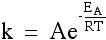

Feist.A,Henry.C,Reed.J,et al..(2007). A genome-scale metabolic reconstructions for Escherichia coli K-12 MG1655 that accounts for... Molecular Systems Biology. 3:121.
Hasona.A, Kim.Y, Healy.F, Ingram.L, K.Shanmugan.(2004).Pyruvate Formate Lyase and Acetate Kinase Are Essential for Anaeurobic Growth of Escherichia coli on Xylose. Bacteriology. 186:22.
Equations and Assumptions
Growth Rate
Decreased as a funciton of temperature according to the Arrhenius equation. Is further decreased due to oxygen limitation as specific OUR reaches critical lows.
Biomass:
Increases exponentially with growth rate
Product
Increases according to specific productivity and biomass concentration.
Specific Productivity
A function of incremental biomass and product yields along with carbun uptake
Yields
Biomass yield decreases with growth rate while product yield increases.
vOUR (mM/hr)
Calculated from specific OUR which is a function of growth rate and oxygen limitations
Volume
Calculated from carbon feed, carbon being combusted, densities (co-feeds not included...yet).